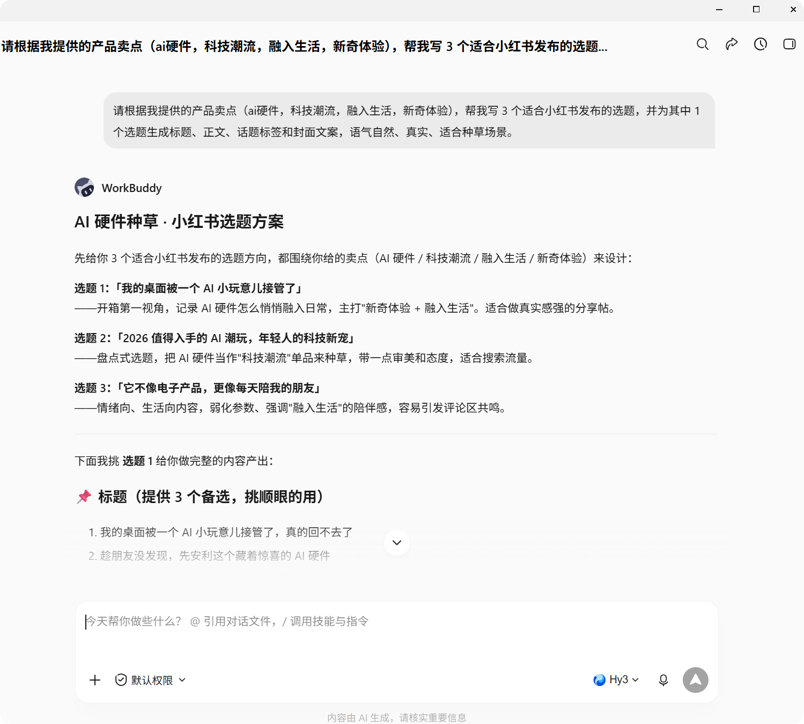
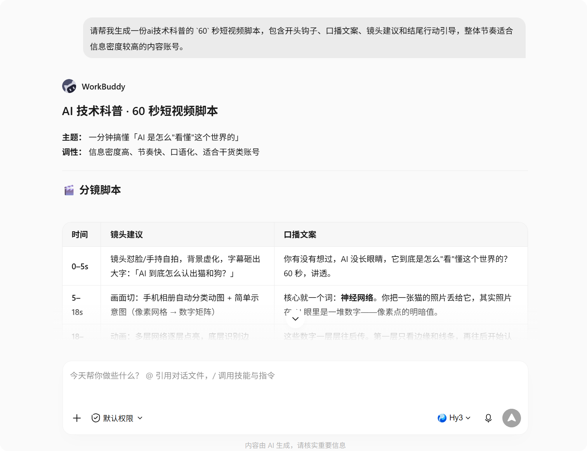

实践四：自媒体运营
一、文档说明
本文介绍如何借助 WorkBuddy 完成自媒体内容策划、文案撰写与视频素材整理，适用于小红书、短视频等内容生产场景。
二、小红书内容生成
- 适用场景：需要快速产出标题、正文、封面文案或选题方向。
- 推荐做法：一次说明账号定位、受众人群、语气风格与内容目标。
- 示例指令：
请根据我提供的产品卖点，帮我写
3个适合小红书发布的选题，并为其中1个选题生成标题、正文、话题标签和封面文案，语气自然、真实、适合种草场景。

三、视频内容生成
- 适用场景：需要将脚本、口播文案、镜头分镜或视频说明快速整理出来。
- 推荐做法：说明视频时长、平台类型、目标受众与输出形式。
- 示例指令：
请帮我生成一份
60秒短视频脚本，包含开头钩子、口播文案、镜头建议和结尾行动引导，整体节奏适合信息密度较高的内容账号。

四、使用建议
- 先定平台，再写内容：不同平台的内容结构和节奏差异较大。
- 明确人群与风格：能显著提升文案贴合度。
- 先出初稿，再做微调：标题、封面、标签和正文建议分轮优化。